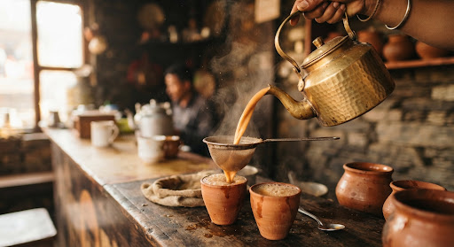

The Morning Steep schedule 07:15 AMMaster Brew
The High 'Chhaneko' Pour
Hand-beaten brass kettle, steaming cascade into porous unglazed earthen cups. Frothy, seasoned with freshly cracked ginger root, green cardamom, and fragrant black pepper from eastern hills.
photo_camera
Shot by Subash S. • Tokha Main Bar